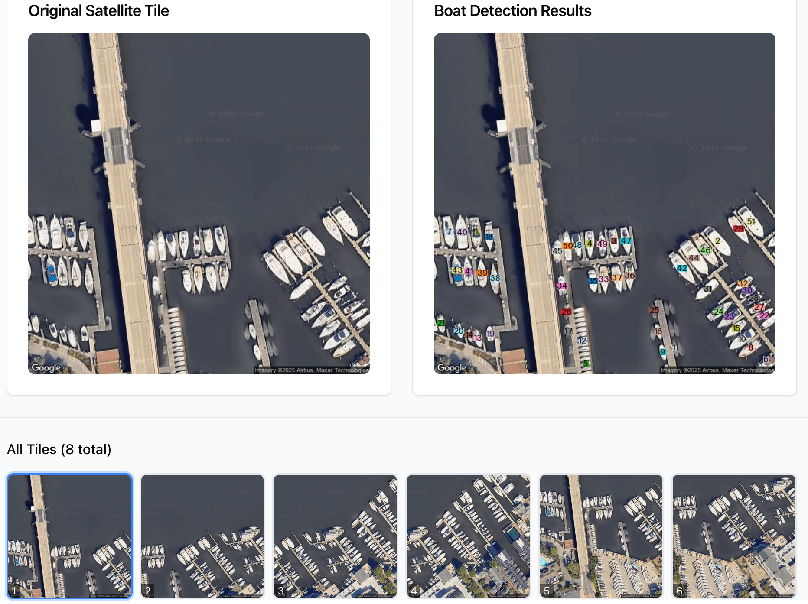

Marina Analysis Platform User Guide
Azure Maps - AI-Powered Boat Detection & Analysis
Overview
Marina Analysis Platform (Azure Maps) is a comprehensive web-based application that combines Azure Maps satellite imagery with AI-powered computer vision to detect and analyze boats in marina areas.
Key Features
- ✅ Azure Maps Integration - High-resolution satellite imagery
- ✅ AI-Powered Detection - Vision Agent with OwlV2
- ✅ Polygon AOI Support - Custom area definition
- ✅ Spatial Filtering - 70%+ inside AOI
- ✅ Smart Deduplication - 70% overlap threshold
- ✅ Batch Processing - Multiple marinas from CSV
- ✅ Real-time Progress - Live detection updates
- ✅ Excel Export - Detailed boat measurements
Purpose
Marina Analysis Platform is Phase 2 of the marina analysis workflow. Use it to:
- Load satellite imagery for defined marina areas
- Run AI detection to identify boats
- Apply spatial filtering to remove out-of-bounds detections
- Deduplicate overlapping detections
- Export filtered results for verification
Getting Started
Initial Screen
Main interface with navigation tabs
Main Navigation:
- Single Analysis - Analyze individual marinas
- Batch Processing - Process multiple marinas from CSV
- File System - Browse generated files
- System Cleanup - Clear all data
Single Marina Analysis Workflow
Step 1: Define Area of Interest

Paste polygon coordinates for marina area
sample_data/6147-addresses_export-AOI-Capture-download.csv
How to Get Polygon Coordinates:
- Open
6147-addresses_export-AOI-Capture-download.csvin a text editor - Find the "Polygon Coordinates" column (column G)
- Copy the entire JSON array
- Paste into the "AOI Polygon" text area in the platform
Example - RecordID 6147 (Annapolis Marina):
- Address: 410 Severn Avenue, Annapolis, MD 21403
- RecordID: 6147
Polygon Format:
[{"lat":38.97220835300037,"lng":-76.48325928004924},{"lat":38.97275095846031,"lng":-76.48386017213753}, ...]Step 2: Load Satellite Maps

Click the "Load Maps" button to load satellite imagery for the pasted polygon coordinates
Action: Click the "Load Maps" button to load satellite imagery for the pasted polygon coordinates.
System automatically:
- Calculates optimal tile grid (25% overlap)
- Fetches tiles from Azure Maps API
- Stores with 24-hour cache
- Displays tile grid in the interface
After loading: prediction side is empty, showing overlapping tiles with adaptive coverage
After loading, the prediction side will be empty (no detections yet), but you'll see a group of overlapping image tiles. The system uses adaptive logic to calculate the optimal number and arrangement of tiles needed to cover the entire polygon area.
What You'll See:
- Tile grid showing all fetched satellite images
- Overlapping tiles (25% overlap between adjacent tiles)
- Tile numbers for reference (e.g., Tile 0, Tile 1, Tile 2, etc.)
- Input images on the left (original satellite tiles)
- Empty prediction area on the right (will show annotated results after detection)
Step 3: Run Boat Detection

Click "Run Detection" button - choose single image or all images
Action: Click the "Run Detection" button to trigger boat detection. You have two options:
- Run Detection on Single Image: Process only the currently selected tile
- Use this to test/preview detection on one tile
- Faster for quick checks
- Results shown for selected tile only
- Run Detection on All Images: Process all loaded tiles
- Use this for complete marina analysis
- Processes each tile sequentially
- Recommended for final results

Real-time display: input tile on left, annotated prediction on right
Real-Time Display:
As detection runs, you'll see results appear with:
- Input tile on the left: Original satellite image
- Annotated prediction on the right: Same image with green bounding boxes around detected boats
- Boat dimensions: Length and width displayed on each detection
- Tile-by-tile processing: Results appear as each tile completes
Step 4: Review Results
Detection results with green bounding boxes
Statistics showing filtering and deduplication
Statistics Panel Overview
The detection statistics panel displays the complete analysis pipeline, showing how raw detections are filtered and deduplicated to produce final results.
Key Metrics Displayed:
- Total Raw Detections: All boats found across all tiles (includes duplicates and out-of-bounds detections)
- AOI Filtered: Boats with 70%+ of their bounding box inside the polygon boundary
- After Deduplication: Final unique boats after removing duplicates in overlapping tile areas (70% overlap threshold)
- Processing Time: Total time taken for detection and filtering
- Tiles Processed: Number of satellite tiles analyzed
Understanding the Numbers:
The statistics show the reduction at each stage:
- Raw detections include all AI predictions across tiles
- AOI filtering removes boats outside marina boundaries
- Deduplication removes the same boat detected in multiple overlapping tiles
- Final count represents unique boats within the marina polygon
Example Results (RecordID 6147 - Annapolis Marina):
- Total Raw Detections: 106 boats (across 2 tiles)
- Tile 0 (tile1): 51 boats
- Tile 7 (tile2): 55 boats
- AOI Filtered: ~55 boats (boats inside polygon)
- After Deduplication: ~55 boats (final count)
Sample Files:
sample_data/6147-boat-detections-tile1-export.csv- 51 detections from Tile 0sample_data/6147-boat-detections-tile2-export.csv- 55 detections from Tile 7sample_data/6147-Detection-results.xlsx- Final filtered results (~55 boats)
Step 5: Export Filtered Results
Download Excel file with filtered boat data
sample_data/6147-Detection-results.xlsx
Excel Columns:
| Column | Description | Example (from RecordID 6147) |
|---|---|---|
| Type | Boat size classification | medium |
| Latitude | GPS latitude (15 decimals) | 38.972417739218200 |
| Longitude | GPS longitude (15 decimals) | -76.484367578396000 |
| Length (m) | Boat length in meters | 18.5 |
| Width (m) | Boat width in meters | 7.4 |
| Polygon Coords | Bounding box coordinates | TL: lat,lng | TR: lat,lng | ... |
Batch Processing Workflow
Step 1: Prepare CSV File
Upload CSV file exported from GeoCapture with marina data.
Sample File: sample_data/6147-addresses_export-AOI-Capture-download.csv
Required Columns:
- RecordID - Unique marina identifier (alphanumeric, e.g., 6147, MAR-001, ANN-6147) - MUST BE ADDED MANUALLY
- Address - Marina address
- Geocode Latitude/Longitude - Center point coordinates
- Polygon Coordinates - JSON array of polygon points (required for AOI)
- Formatted Address - Formatted address from geocoding
⚠️ Important Note about RecordID:
The RecordID column must be manually added to the CSV file after exporting from GeoCapture (AOI Capture app). GeoCapture exports do not include RecordID by default.
Why Manual Addition is Required:
- Many different marinas can have the same RecordID in source data
- Same marina can appear with different RecordIDs
- Manual assignment ensures each marina has a unique, traceable identifier
- RecordID is used in output filenames:
[RecordID]-Detection-results.xlsx
Example Record (RecordID 6147):
- Address: 410 Severn Avenue, Annapolis, MD 21403
- Coordinates: 38.97167, -76.48337
- Expected Output:
6147-Detection-results.xlsx(~55 boats)
Note: This is the same file used for Single Analysis (just paste the polygon coordinates)
Step 2: Upload and Process

Upload CSV file for batch processing
Configure batch processing settings

Monitor progress for multiple marinas
Understanding Detection Results
Spatial Filtering

AOI spatial filtering keeps boats 70%+ inside polygon
How It Works:
- Check boat's 4 corner points (bounding box)
- Use ray-casting for point-in-polygon test
- Require 3 out of 4 corners (75%) inside AOI
- Filter out boats not meeting threshold
Deduplication Process
Smart deduplication removes overlapping detections
Process:
- Sort by confidence score (highest first)
- Calculate polygon overlap percentage
- Remove boats with >70% overlap
- Preserve only unique detections
Tips & Best Practices
Zoom Level Selection
| Zoom | Resolution | Use Case | Speed |
|---|---|---|---|
| 18 | ~2.39m/pixel | Quick surveys | Fast |
| 19 | ~1.19m/pixel | Standard (Recommended) | Medium |
| 20 | ~0.60m/pixel | High detail | Slow |
Batch Processing Tips
- Test First: Run single marina before batch
- Group Similar: Process marinas by region
- Monitor Progress: Check for failed analyses
- Export Regularly: Download incrementally
Troubleshooting
Maps Won't Load
Solutions:
- Verify Azure Maps API key is configured
- Check polygon coordinates are valid JSON
- Verify internet connectivity
- Check API quota hasn't been exceeded
Detection Fails
Solutions:
- Ensure Vision Agent is installed (Python)
- Check available memory (needs 4GB+ free)
- Verify satellite tiles loaded successfully
- First run downloads OwlV2 model (may take time)
No Boats Detected
Possible Causes:
- Marina currently has no boats
- Zoom level too low (increase to 19 or 20)
- Verify tiles show correct location
- Try default Newport example to test
Workflow Integration
Marina Analysis Platform is Phase 2 in the complete workflow:
- Phase 1: GeoCapture - Draw marina polygons
- Phase 2: Marina Analysis Platform - Run AI detection ⬅ You are here
- Phase 3: Detection Visualizer - Verify results
- You need to detect boats in satellite imagery
- You have marina AOI polygons from GeoCapture
- You want filtered, deduplicated detection data
- You need Excel exports for analysis